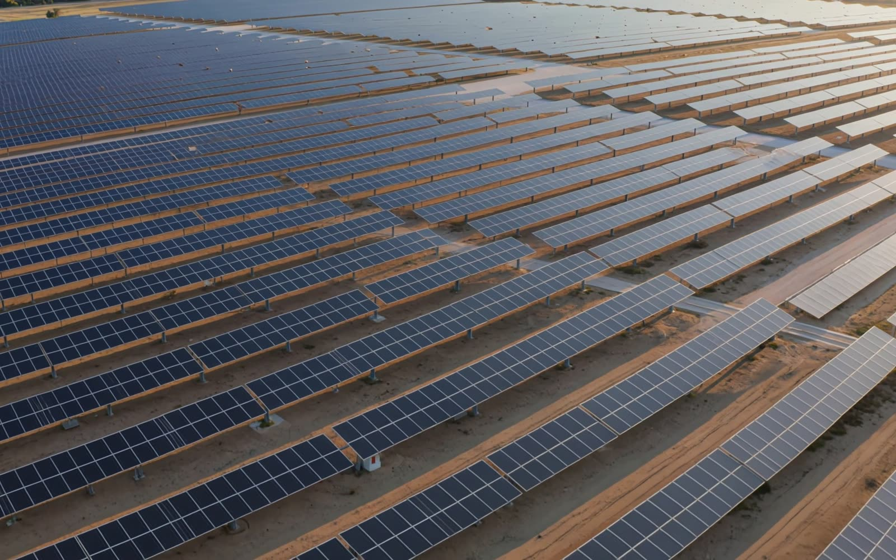

15,4MWp
KONYA · 2025
Yunak GES
INSOS Enerji · arazi GES yapımı
2012'den bu yana arazi ve çatı GES'leri, OG/AG altyapı, trafo ve enerji nakil hatları. Projeden devreye almaya tek ekip.
Aksaray Enerji; kamu kurumları, belediyeler, organize sanayi bölgeleri ve özel yatırımcılar için güneş santrali ve elektrik altyapısı kuran bir mühendislik ve taahhüt firmasıdır.
Kurumsal portalımızdaki mühendislik araçlarını doğrudan deneyimleyin: ilinizdeki güncel TEİAŞ trafo merkezi boş kapasitesini sorgulayın, AeCAD motoruyla santral yerleşiminizi simüle edin ve dijital şantiye/izleme altyapımızı inceleyin.
| İl | Trafo Merkezi (TM) | Bara | Dağıtım / OSB | Güncel Boş Kapasite | Durum | İşlem |
|---|---|---|---|---|---|---|
| TEİAŞ trafo merkezi verileri yükleniyor… | ||||||
Aksaray Enerji ile anahtar teslim veya işçilik sözleşmesi imzaladığınızda size özel Saha Portalı yetkisi tanımlanır. İş kalemlerinin tamamlanma yüzdesini, saha personel puantajını ve günlük şantiye fotoğraflarını şeffaf biçimde görürsünüz.
İzin süreçlerinden devreye almaya kadar her aşamayı aynı ekip yürütür; yatırımcı tek muhatapla çalışır.
Fizibilite, imar, dağıtım şirketi ve TEDAŞ süreçleri.
Konstrüksiyon, panel, inverter ve kablolama; mekanik ve elektrik montaj.
OG/AG, trafo merkezi, ENH ve yeraltı kablo işleri.
Kabul, işletme sorumluluğu, arıza ve periyodik bakım.

Lisanslı ve lisanssız arazi ve çatı GES'leri, off-grid sulama sistemleri. Mekanik ve elektrik montajdan devreye almaya.
GES referanslarıOG/AG tesisleri, 154 kV iletim hatları, trafo merkezi ve trafo postaları, enerji nakil hatları, yeraltı kablolama ve aydınlatma.
Altyapı referanslarıTeknik fizibilite, imar ve izin süreçleri, TEDAŞ ve dağıtım şirketi süreçleri, proje danışmanlığı, yatırım optimizasyonu.
Dağıtım şebekesi arıza-bakım, GES işletme ve periyodik bakım, trafo ve pano yenileme, OG işletme sorumluluğu.
INSOS Enerji · arazi GES yapımı
INSOS Enerji · arazi GES yapımı
HG Tarım Yatırım · çatı GES